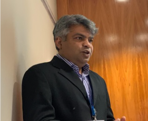

<section class="about_section layout_padding">
    <div class="container">
      <div class="row">
        <div class="col-md-6">
          <div class="detail-box">
            <div class="heading_container">
              <h2>
                Researach & Publications
              </h2>
              
            </div>
            <p>
              Dr Riad Shams is Senior Lecturer in Marketing and PhD Programme Leader at the Newcastle Business School, Northumbria
              University, UK. He has extensive industry and academic experience in Australia, Bangladesh, Russia, the Netherlands, and the
              UK. He has completed his doctoral research from the Central Queensland University, and his PGCAP from Northumbria
              University. His MBA (Major in Marketing) and BBA (Honours in Marketing) were awarded by the University of Dhaka. He is a
              Fellow of the Higher Education Academy, UK; and a Fellow of the EuroMed Academy of Business, EU.  He is an Associate
              Editor of the Journal of Social Entrepreneurship. As per Google Scholar, Dr Shams is 5 th most cited researcher in Social
              Business research, and 6 th most cited researcher in Sustainable Marketing research.
            </p>
            <a href="research.html">
              🚀 Explore Research & Publications 🚀
            </a>
          </div>
        </div>
        <div class="col-md-6">
          <div class="img_container">
            <div class="img-box b1">
              
            </div>
          </div>
        </div>
      </div>
    </div>
  </section>